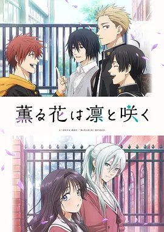

8.1
薰香花朵凛然绽放
The Fragrant Flower Blooms with Dignity
2025
日本
评分 8.1
导演:
黑木美幸
演员:
中山祥德 / 井上穗乃花 / 户谷菊之介 / 内山昂辉 / 石桥阳彩
类型:
剧情,爱情
剧情简介
在两所相邻却风格迥异的高中之间，凛太郎与薰子始于一次看似偶然的相遇。凛太郎外表高大凶狠，让人误会不断，实际上却在家中蛋糕店里认真又温柔。他与薰子的第一次相遇，就发生在蛋糕店的傍晚时分。薰子娇小纤细，却能轻松吃完好几盘蛋糕。她匆匆离开的背影让凛太郎以为自己又吓到了人，却没想到，那只是少女的害羞。隔日放学后，凛太郎意外在校门口再次见到薰子。她来自气质完全不同的桔梗女子高校，而凛太郎就读的千鸟高校常被贴上“不良”标签，两个世界似乎被无形的墙隔开。然而，从再次对上的那一刻起，隔阂悄悄松动。凛太郎在薰子轻快的语气中体会到被信任的感觉，而薰子也在与他的交流里，找到了能自由做自己的片刻。随着两人渐渐靠近，甜味与酸涩在校园的空气中交织：凛太郎在揉面时的迟疑、薰子在樱花树下的落寞、同校好友的揣测、两校生之间的刻板印象——这些细碎又真实的青春元素，构成故事的脉动。作品以轻柔的笔触呈现“被理解”与“去理解”的过程，让恋爱萌芽并非突兀，而是自然地在目光、动作与沉默之间缓慢生长。